MEN'S WARDROBE · STYLED BY LUCA
LookAmigo
내 옷장 그대로,
루카가 코디해 줄게요.
LookAmigo는 이미 가진 옷으로 오늘의 코디를 짜 주는 남성 옷장 앱이에요. 스타일리스트의 코디 공식이나 루카의 코디북으로 조합을 고르고, 원할 때만 내 모습으로 입혀 봐요. 내일 입을 옷은 전날 밤 걸어 두고, 마음에 든 코디는 한 권의 룩북으로 모아요.
FREE코디 추천은 크레딧 없이 쓸 수 있어요. 착용 이미지만 원할 때 1 크레딧을 써요.
01 / 두 갈래 추천
스타일리스트에게 맡기거나,
루카의 코디북으로.
오늘의 코디는 두 가지 방법으로 받아요. 어느 쪽이든 내 옷장에 있는 옷으로 고르고, 날씨·일정·드레스 코드 같은 맞춤 설정은 두 추천에 똑같이 적용돼요.
- 01
스타일리스트 추천
스타일리스트마다 자기 코디 공식이 있어요. 고른 사람의 공식으로 내 옷장에서 조합을 찾아요. 지금은 AI 스타일리스트 다섯 명이 정장·댄디·아메카지·시티보이·어른의 주말을 맡아요.
- 02
LookAmigo 추천
AI 스타일리스트 루카가 룩아미고 코디북에서 배운 조합으로 내 옷장을 다시 짜요. 추천마다 왜 이렇게 골랐는지 코디 설명이 함께 나와요.
- 03
옷장 밖 새 옷도
원하면 ‘옷장에 없는 새 옷도 제안받기’를 켜요. 이때만 AI 분석·추천 크레딧을 쓰고, 기본 추천은 크레딧 없이 써요.
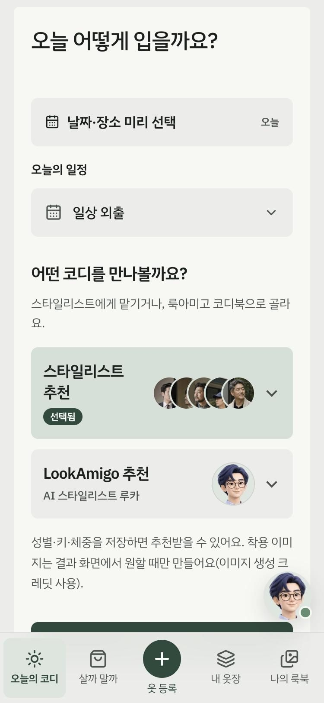
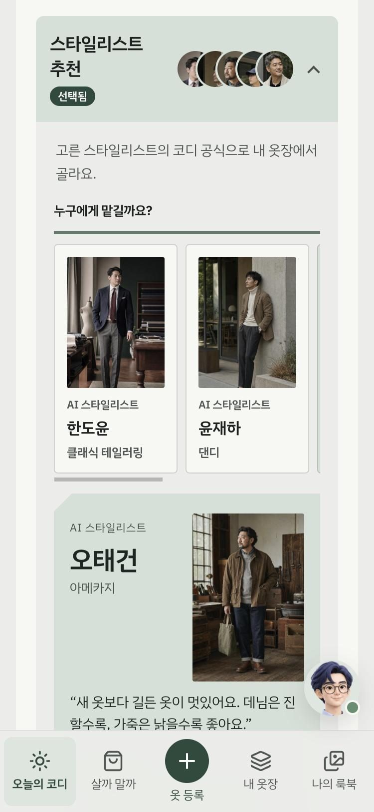
운영 중인 서비스 화면(2026년 11월). 화면을 누르면 크게 볼 수 있어요.
AI STYLISTS
다섯 명의 스타일리스트,
다섯 가지 코디 공식.
모두 실제 사람이 아닌 AI 스타일리스트예요. 스타일이 겹치지 않게 한 사람이 한 스타일을 맡고, 앱에서 이름 옆에 ‘AI 스타일리스트’라고 밝혀요. 각자 자기 공식대로 입은 대표 룩 사진이 있어요.
클래식 테일러링
한도윤
“블레이저 한 벌로 일주일을 입혀요.”
- 재킷이 진하면 바지는 한 톤 밝게
- 셔츠는 흰색이나 하늘색으로 깨끗하게
- 벨트와 구두는 같은 갈색 계열로
댄디
윤재하
“재킷에 니트, 슬랙스에 로퍼.”
- 재킷 안엔 셔츠 대신 얇은 니트를
- 바지는 주름 잡힌 슬랙스로 단정하게
- 구두는 로퍼, 시계는 가죽 줄로
아메카지
오태건
“데님과 가죽, 오래 입을수록 멋이 나요.”
- 바지는 짙은 청바지를 기본으로
- 아우터는 갈색·올리브·베이지 같은 흙색으로
- 신발은 갈색 가죽이나 부츠로
시티보이
강서진
“넉넉한 실루엣에 소품 하나.”
- 상의는 한 치수 크게, 바지는 넓게
- 네이비·그레이·흰색을 기본으로
- 신발은 깨끗한 흰 운동화로
어른의 주말
배무열
“주말에도 어른스럽게, 편하게.”
- 니트에 면바지가 주말의 기본
- 재킷 대신 가벼운 블루종이나 카디건
- 로퍼 하나로 어른스럽게
02 / 내 옷장
사진 한 장이면,
옷 정보는 자동으로.
옷을 찍어 올리면 종류·색·계절을 알아서 채우고, 필요하면 고칠 수 있어요. 옷장은 종류별로 나뉘고, 옷마다 착용 기록이 쌓여요.
- 01
사진으로 등록
옷 사진은 한 장에 AI 분석 크레딧 1개로 자동 분석해요. 분석 결과는 확인·수정할 수 있고, 직접 입력해서 저장할 수도 있어요.
- 02
종류별로 한눈에
상의·하의·아우터·신발로 나뉘고, 색상별·옷장별로 정렬해요. 세탁·수선·보관 중인 옷은 추천에서 잠시 빼 둘 수 있어요.
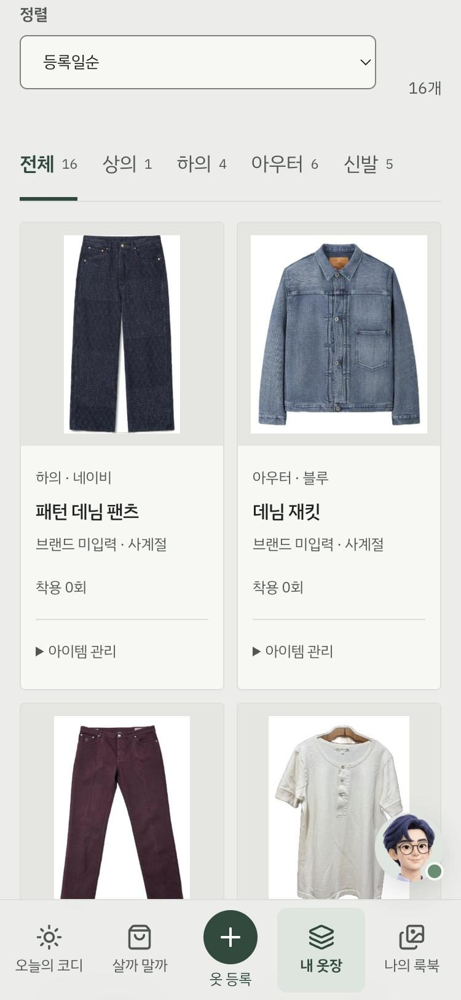
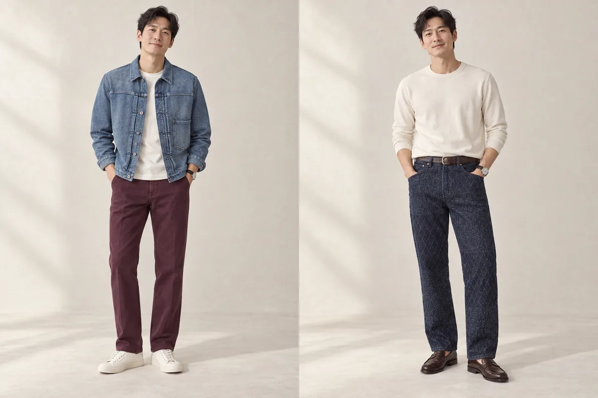
운영 중인 서비스 화면(2026년 11월). 착용 이미지는 실제 사람을 닮지 않은 가상 모델로 만든 예시예요.
03 / 원할 때만 입혀 보기
추천은 바로 보고,
입혀 보기는 원할 때만.
추천이 끝나면 코디 카드와 고른 이유가 먼저 열려요. 내 사진으로 입혀 보는 착용 이미지는 버튼을 눌렀을 때만 만들고, 버튼에 쓰는 크레딧을 먼저 적어 둬요.
- 01
‘내 모습으로 입혀 보기 · 1 크레딧’
프로필의 전신·얼굴 사진과 고른 옷으로 한 벌을 입혀요. 보통 1분쯤 걸려요.
- 02
실패하면 자동으로 돌려드려요
이미지를 만들지 못하면 예약한 크레딧을 돌려드려요. 만든 이미지를 다시 보는 건 몇 번이든 무료예요.
- 03
살까 말까도 같은 방식으로
‘살까 말까’에 사고 싶은 옷을 찍어 올리면 지금 옷장과 잘 맞는지 알려 줘요. 후보 사진은 옷장에 저장되지 않아요.
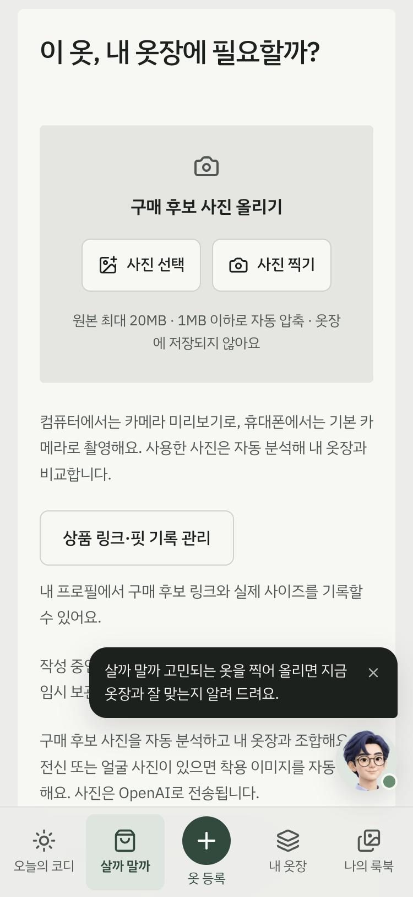
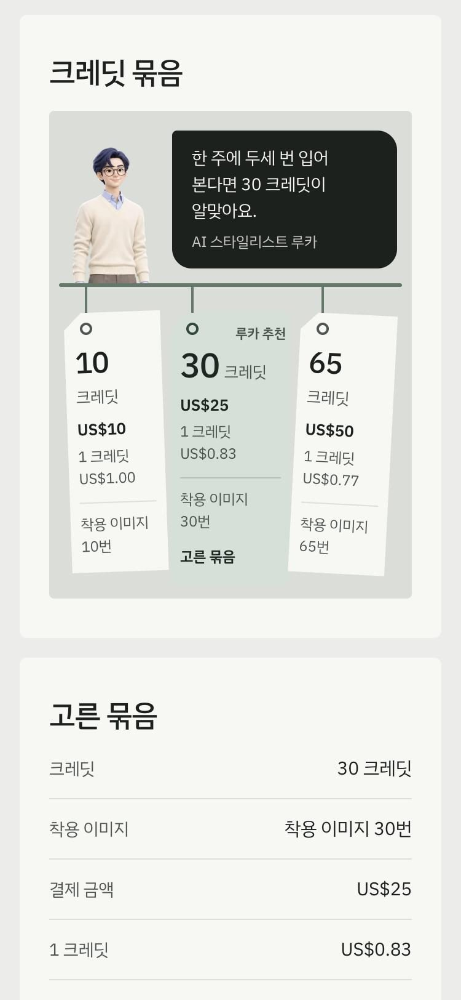
운영 중인 서비스 화면(2026년 11월). 화면을 누르면 크게 볼 수 있어요.
04 / 발렛 스탠드
내일 입을 옷은,
전날 밤에 걸어 두세요.
추천 결과 아래 ‘이대로 걸어 두기’를 누르면 내일의 룩이 발렛 스탠드에 걸려요. 꼬리표는 밤에는 ‘내일’, 다음 날 아침에는 ‘오늘’로 한 번 뒤집혀요.
- 01걸 때와 아침의 날씨 예보를 비교해, 달라졌으면 알려 줘요.
- 02체크하면 밤사이 착용 이미지를 만들어 둬요. 크레딧을 쓰는 선택이라 기본은 꺼져 있어요.
- 03아침에 ‘오늘 이 룩으로 입기’를 누르면 나의 룩북에 기록돼요.
05 / 나의 룩북
좋아하는 코디를,
한 권의 룩북으로.
오늘의 코디는 날짜와 함께 자동으로 저장돼요. 저장한 코디, 코디 캘린더, 여행 코디로 다시 보고, 고른 사진으로 잡지 같은 PDF 룩북을 만들어요.
- 01
코디 캘린더와 여행 코디
입은 날짜별로 돌아보고, 저장한 코디로 여행을 준비하며 짐 체크리스트까지 챙겨요.
- 02
PDF 룩북 만들기 · 2 크레딧
착용 이미지를 최대 24장까지 골라 인쇄할 수 있는 PDF 룩북을 만들어요. 다 만들어졌을 때만 크레딧이 빠져요.
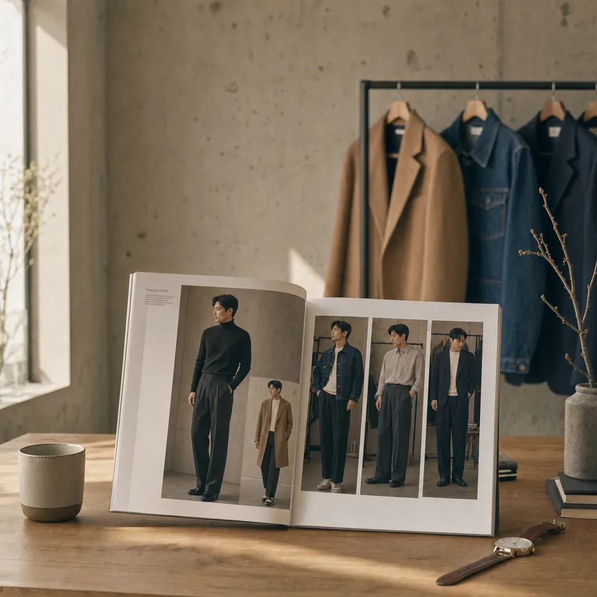
앱의 ‘나의 룩북’ 배너. 룩북 지면의 남성은 가상 모델이에요.
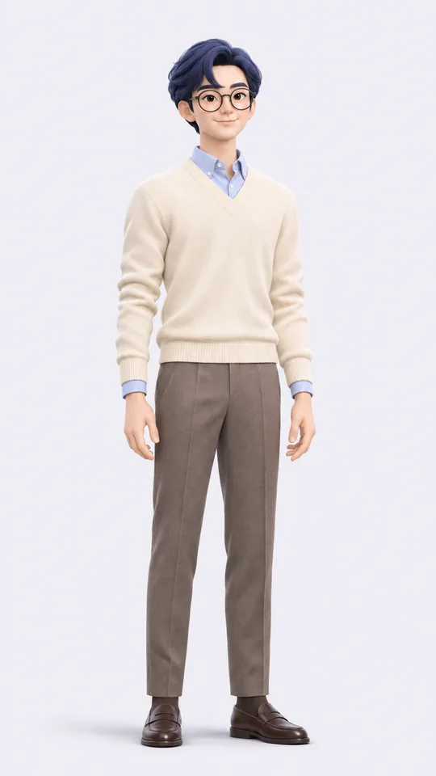
MEET LUCA
룩아미고의 AI 스타일리스트,
루카예요.
“새 옷을 사기 전에, 이미 가진 옷부터 다시 맞춰 봐요.”
짙은 파란 머리에 둥근 안경을 쓴 루카는 LookAmigo 추천을 맡는 AI 스타일리스트예요. 룩아미고 코디북에서 배운 조합으로 내 옷장을 다시 짜고, 앱 곳곳에서 다음에 할 일을 알려 줘요. 화면에서도 늘 ‘AI 스타일리스트’라고 밝혀요.
- 01앱 오른쪽 아래에서 시간에 맞춰 인사하고, 화면마다 무엇을 하는 곳인지 짧게 알려 줘요. 말풍선 알림은 끌 수 있고, 설정에서 도우미를 숨길 수도 있어요.
- 02루카를 누르면 ‘오늘 코디 바로 만들기’, ‘사진으로 옷 등록하기’, ‘1분 사용법 보기’로 바로 가요.
- 03로그인 화면에서는 거울 앞에서 일곱 가지 스타일로 옷을 갈아입어요.
- 04루카의 페이지 피드백 게시판에 코디 소감을 남길 수 있어요. AI 스타일리스트의 답글은 룩아미고 운영팀이 작성해요.
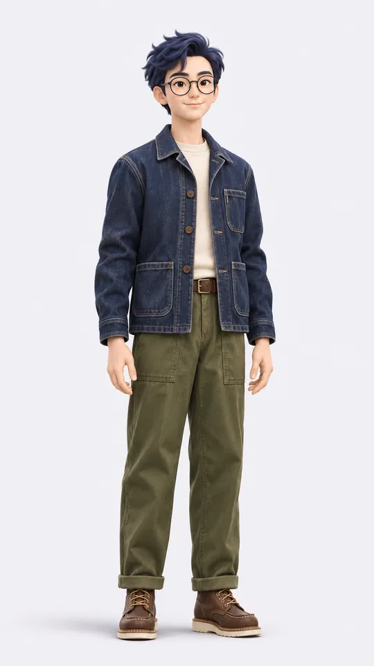
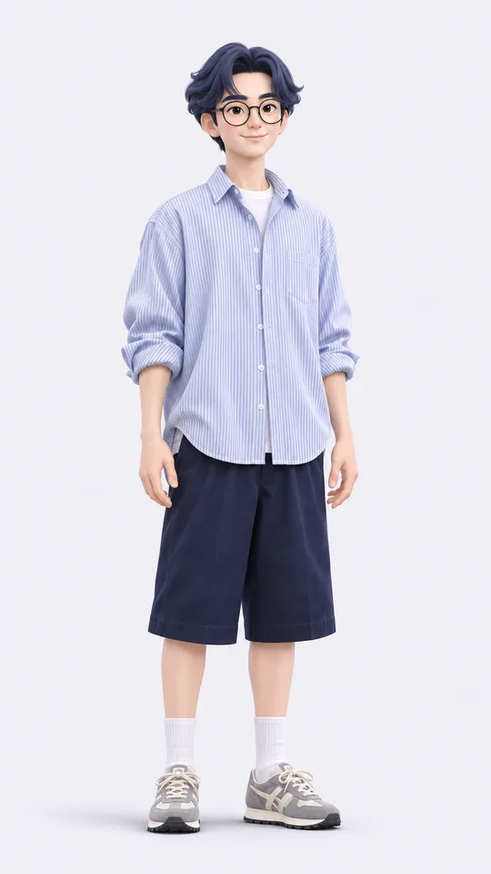
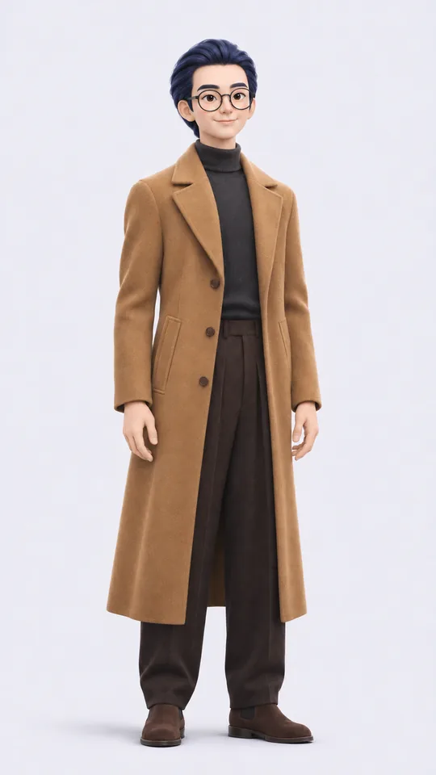
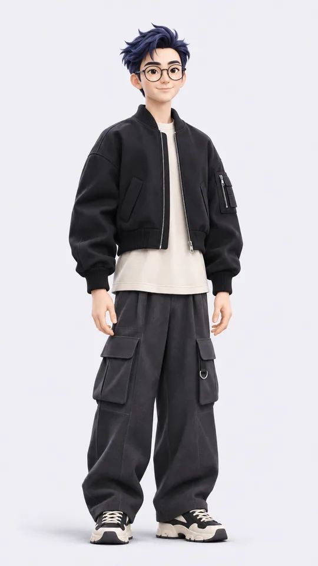
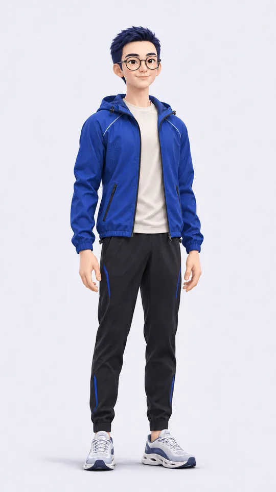
06 / 크레딧
코디는 무료,
입혀 보기는 한 번에 1 크레딧.
스타일리스트와 루카의 코디 추천, 저장한 결과 다시 보기는 크레딧 없이 써요. 착용 이미지와 룩북을 만들 때만 크레딧을 쓰고, 구매한 크레딧은 12개월 동안 유효해요.
10 크레딧
처음 가볍게 입어 보기
$10
1 크레딧 $1.00
- 착용 이미지 10번
- 또는 PDF 룩북 5권
30 크레딧 루카 추천
한 주에 두세 번 입어 보는 분
$25
1 크레딧 $0.83
- 착용 이미지 30번
- 10 크레딧보다 1 크레딧이 17% 저렴
65 크레딧
매일 입어 보는 분
$50
1 크레딧 $0.77
- 착용 이미지 65번
- 1 크레딧 값이 가장 낮아요
- 착용 이미지 1 · 룩북 2착용 이미지는 한 번에 1 크레딧, PDF 룩북은 다 만들어졌을 때 2 크레딧.
- 실패하면 차감 없음이미지를 만들지 못하면 예약한 크레딧을 자동으로 돌려드려요.
- 가입하면 체험부터가입하면 착용 이미지 크레딧과 AI 분석·추천 크레딧을 체험으로 드려요.
- 12개월 · 자동 갱신 없음구매한 크레딧은 12개월 동안 쓰고, 정기 결제는 없어요.
크레딧 결제는 오픈 준비 중이에요. 결제가 열리면 Polar(판매 대행)의 결제 페이지에서 미국 달러로 결제해요. 세금은 지역에 따라 결제할 때 더해질 수 있고, 원화 금액은 결제일 환율과 카드사에 따라 달라져요. 가격과 이용 조건은 서비스의 크레딧 안내가 기준입니다.
Your next step
내 옷장 그대로,
오늘은 새로운 조합을.
새 탭에서 서비스로 이동합니다.
옷 사진 분석과 착용 이미지를 만들 때는 사진이 AI 서비스(OpenAI, Google)로 전송돼요. 착용 이미지는 스타일을 비교하고 코디를 구상하는 데 쓰는 참고 이미지예요.